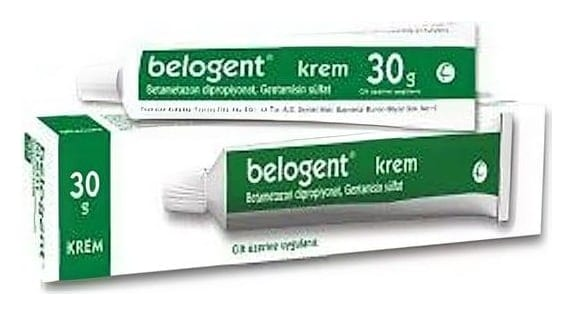

Belogent %0,05+%0,1 Krem, 30 g

Ne için kullanılır
KT · Bölüm 1 BELOGENT etkin madde olarak güçlü bir kortikosteroid olan betametazon dipropiyonat ve antibiyotik olarak gentamisin sülfatı birlikte içerir. BELOGENT güçlü etkili kortikosteroidler ve antibiyotik kombinasyonları olarak adlandırılan bir ilaç grubuna dâhildir. BELOGENT, kortikosteroidlere cevap veren enfeksiyon gelişmiş deri rahatsızlıklarında (deride belli bölgelerde kızarıklık, kaşıntı ve döküntü ile seyreden bazı dermatit türleri, terleme bozukluğu gibi) dışarıdan cilde sürülerek kullanılır. İçerdiği betametazon ciltteki rahatsızlık sonucu ortaya çıkan iltihabın, kaşıntı ve kızarıklık gibi belirtilerin giderilmesinde oldukça güçlü bir etkiye sahiptir. İçerdiği diğer etkin madde gentamisin ise duyarlı mikroorganizmaların neden olduğu enfeksiyonun iyileştirilmesinde etkilidir.